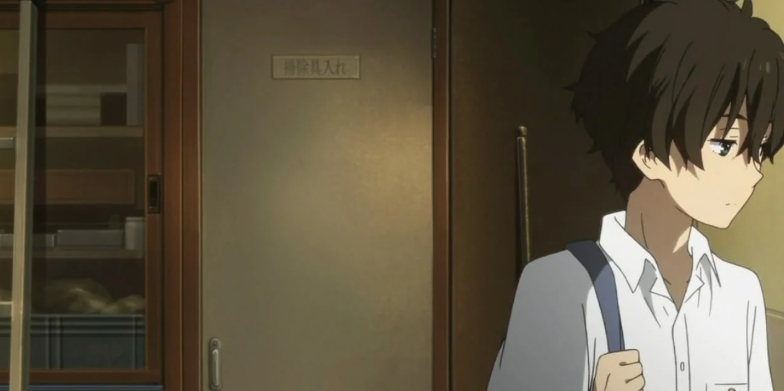

折木奉太郎

折木奉太郎，推理小说《古典部系列》、动画《冰菓》第一男主角。动画中由中村悠一配音，电影中由山崎贤人饰演。
拥有出色的洞察力和推理能力。人生信条是“不做也行的事情就不做，非做不可的事情一切从简”，自称“节能主义者”。对校内的社团活动几乎没有兴趣，但在姐姐的邀请下加入了古典社。洞察力和推理能力被古典社的千反田爱瑠发现，面对时常充满好奇心的千反田爱瑠而开始分析一些生活中的谜团。
在《名侦探柯南》漫画作品迎来20周年的2014年，《冰菓》中的男主折木奉太郎也亮相于柯南单行本中
身份背景
小说第一卷开篇15岁，一两话后16岁，小说第五卷中已过17岁生日。神山高中一年级B班的男生，是古典文学部的部员，姐姐是折木供惠。座右铭是：没必要做的事不做，必须做的事情一律从简。
相貌穿着
留着深棕色的卷发（少许泛绿），动画中随环境不同，渲染的发色也有微妙的不同，通过取色发现，深棕色所占比例最大，有几次微微泛着绿色。有着翠绿的瞳孔 。平时大多身着黑色修长的学生装，休闲装大多简约，冬季爱穿白色的大夹袄，戴一条厚厚的黄色围巾。
性格特点
拥有出色的洞察力和推理能力，但自认是个再平凡也不过的灰色高中生。个人座右铭是“没必要的事不做，必要的事尽快做。”不愿做任何会让自己消耗能量的事情，对校园活动没有任何兴趣，觉得这是一种浪费效率的事情，很不节能。在姐姐折木供惠的“威逼利诱”下加入了古典部。
在各个事件中担当“侦探”的角色，对于爱瑠迎面袭来的好奇心与委托，多半无法脱身。为了抚平爱瑠排山倒海般的疑问，常不由自主地顺应爱瑠的意思，开始分析日常生活中的谜团，提出最具可能性的假说并找出真相。在“节能主义”的影响下，社交活动少。即便是古籍研究社的成员，也仅是和里志保持了较持续的交流，与摩耶花和爱瑠在很大程度上仅止于必要的熟悉而没有进一步的深交，对三人在其余时间的活动几乎一无所知。